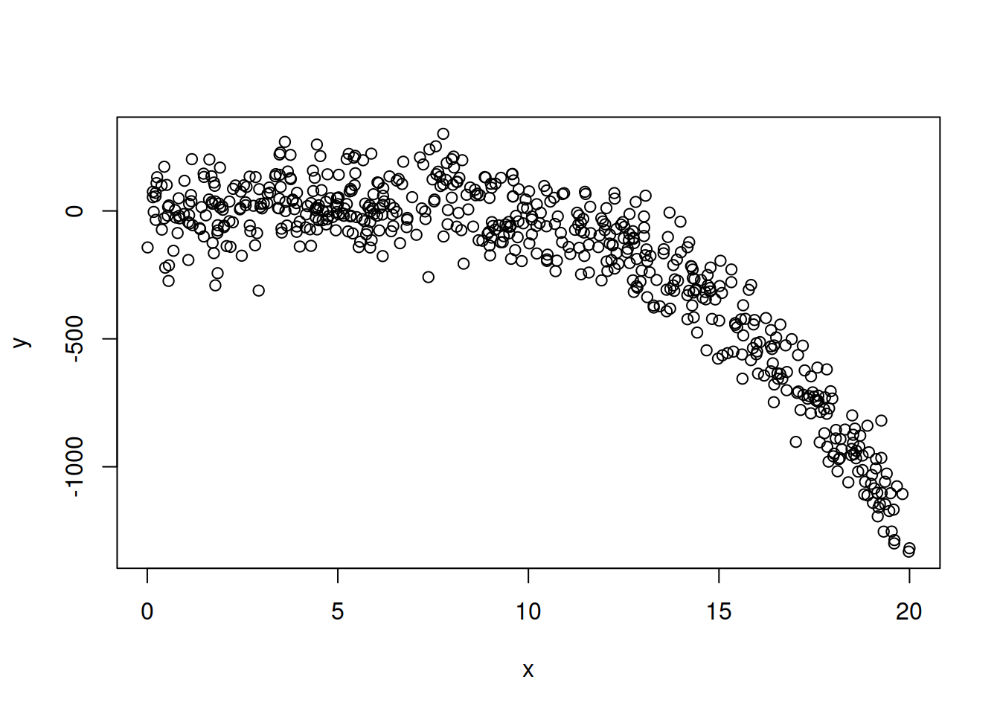

From last time, we basically learned what the following means:
\[
\frac{SS(\hat\beta_{q+1}, ..., \hat\beta_p | \hat\beta_0, ... \hat\beta_q)}{(p-q)s^2} =\frac{S_1 - S(\hat\beta_0) - (S_2 - S(\hat\beta_0))}{(p-q)s^2}\sim F_{p-q, \max(p, q)}
\] where \(s^2\) is the MSE calculated from the larger model.
This allows us to do a test for whether \(\beta_{q+1} = \beta_{q+2} = ... = \beta_p = 0\).
The R code to do this test is as follows. In this code, we believe that the bill length and bill depth are strongly correlated, and thus we cannot trust the CIs that we get from summary(lm()) (we saw “Confidence Regions” in the slides and code for L05).
From this model, SSE is 50814912 on 329 degrees of freedom. This is the same as the SSE in the output of anova(lm2, lm1).
anova(lm2)
Analysis of Variance Table
Response: body_mass_g
Df Sum Sq Mean Sq F value Pr(>F)
flipper_length_mm 1 164047703 164047703 1060.3 < 2.2e-16 ***
Residuals 331 51211963 154719
---
Signif. codes: 0 '***' 0.001 '**' 0.01 '*' 0.05 '.' 0.1 ' ' 1
Again, the SSE of 51211963 matches what we saw in anova(lm2, lm1), and we have 331 degrees of freedom (as expected, the differences in degrees of freedom is 2).
Note that the F-value in anova() is just the ratio of the MSEs, but this is not the case here. Instead, we need to calculate \(s^2\).
We can calculate \(s^2\) as the MSE for the larger model:
s2 <-50814912/329s2
[1] 154452.6
And now we can calculate the F-value as expected:
(51211963-50814912)/ (2* s2)
[1] 1.285349
print(1-pf(1.28539, 2, 329))
[1] 0.2779278
It is left as an exercise to calculate these values based on matrix multiplication. I highly suggest trying it with and without correction factors to convince yourself that both of them work (and to convince yourself that you know what the correction factor is and why it’s necessary).
8.2 ESS Algorithms
The idea above is based on testing a subset of predictors for at least one significant coefficient. This is usually what we want.
However, there are also times where we want to check all predictors one-by-one. This is much less common than the textbook may lead you to believe, but it still happens.
There are three ways to calculate the ESS for all predictors. They are very helpfully labelled Types I, II, and III.
Type I: Sequential Sum-of-Squares (with interactions)
\(\hat\beta_2:\hat\beta_1\) is an interaction term, which means we use a formula like y ~ x1 + x2 + x1*x2 (although we’ll learn why R uses different notation than this).
This gives us an ordered sequence of “is it worth adding x1?”, “if we have x1, is it worth adding x2?”, etc. This is only meaningful if the predictors are naturally ordered (such as polynomial regression, see below).
This checks whether adding predictor \(x_i\) is worth it, considering all other predictors are already in the model.
Type 2 ANOVA (Sequental Sum-of-Squares)
By default, R does sequential sum-of-squares. This is a very important fact to know!
In Types I and II, the order of the predictors matters. In fact, you cannot make any conclusions about the significance that doesn’t make reference to this fact.
## Try changing the order to see how the significance changes!mylm <-lm(mpg ~ qsec + disp + wt, data = mtcars)anova(mylm)
However, there is at least one case where we do care about the order of the predictors. Consider polynomial regression, which we will return to later. For now, it is sufficient to know that we’re dealing with the model: \[
y_i = \beta_0 + \beta_1x_i + \beta_2x_i^2 + \beta_3x_i^3 + ... + \beta_{p-1}x_i^{p-1} + \epsilon_i
\]In this model, notice that we only have one predictor \(x\), but we have performed non-linear transformations (HMWK: why is it important that the transformations are non-linear?).
In this case, a sequential SS setup makes quite a bit of sense. Given we have a linear model, is it worth making it quadratic? Given that we have a quadratic model, is it worth making it cubic? Given that we have a cubic model…
In the code below, I use the I() function (the I means identity) to make the polynomial model. The “formula” notation in R, y ~ x + z, has a lot of options. Including x^2, rather than I(x^2), makes R think we want to do one of the more fancy things, but the I() tells it that we want to literally square it. In the future, we’ll use a better way of doing this.
x <-runif(600, 0, 20)y <-2-3*x +3*x^2-0.3*x^3+rnorm(600, 0, 100)plot(y ~ x)

mylm <-lm(y ~ x +I(x^2) +I(x^3) +I(x^4) +I(x^5) +I(x^6))anova(mylm)
From the table above, we can clearly see that this should just be a cubic model (which is the true model that we generated). Try changing things around to see if, say, it will still detect an order 5 polynomial if if there’s no terms of order 3 or 4.
A note on calculations
Take a moment to consider the following. Suppose I checked the following two (Type II) ANOVA tables:
anova(lm(mpg ~ disp, data = mtcars))
anova(lm(mpg ~ disp + wt, data = mtcars))
Both tables will have the first row labelled “disp” and include its sum-of-squares along with the F-value. Do you expect these two rows to be the same?
Think about it.
Think a little more.
What values do you expect to be used in the calculation?
Which sums-of-squares? Which variances?
Let’s test it out:
anova(lm(mpg ~ disp, data = mtcars))
Analysis of Variance Table
Response: mpg
Df Sum Sq Mean Sq F value Pr(>F)
disp 1 808.89 808.89 76.513 9.38e-10 ***
Residuals 30 317.16 10.57
---
Signif. codes: 0 '***' 0.001 '**' 0.01 '*' 0.05 '.' 0.1 ' ' 1
anova(lm(mpg ~ disp + wt, data = mtcars))
Analysis of Variance Table
Response: mpg
Df Sum Sq Mean Sq F value Pr(>F)
disp 1 808.89 808.89 95.0929 1.164e-10 ***
wt 1 70.48 70.48 8.2852 0.007431 **
Residuals 29 246.68 8.51
---
Signif. codes: 0 '***' 0.001 '**' 0.01 '*' 0.05 '.' 0.1 ' ' 1
They’re different! As homework, find out where the F value for disp is coming from in both tables. (All required values are in the table, and the answer was stated earlier!)
With both the polynomial and the disp example, we see that the interpretation of the anova table is highly, extremely, extraordinarily dependent on which predictors we choose to include AND the order in which we choose to include them. So, yeah. Be careful.
Type III SS in R
There isn’t a built-in function to do this. To create this, we can either use our math (my preferred method) or test each one individually.
anova(lm(mpg ~ disp + wt, data = mtcars),lm(mpg ~ disp + wt + qsec, data = mtcars))
Analysis of Variance Table
Model 1: mpg ~ disp + wt
Model 2: mpg ~ disp + wt + qsec
Res.Df RSS Df Sum of Sq F Pr(>F)
1 29 246.68
2 28 195.46 1 51.22 7.3372 0.01139 *
---
Signif. codes: 0 '***' 0.001 '**' 0.01 '*' 0.05 '.' 0.1 ' ' 1
anova(lm(mpg ~ disp + qsec, data = mtcars),lm(mpg ~ disp + wt + qsec, data = mtcars))
Analysis of Variance Table
Model 1: mpg ~ disp + qsec
Model 2: mpg ~ disp + wt + qsec
Res.Df RSS Df Sum of Sq F Pr(>F)
1 29 313.54
2 28 195.46 1 118.07 16.914 0.0003104 ***
---
Signif. codes: 0 '***' 0.001 '**' 0.01 '*' 0.05 '.' 0.1 ' ' 1
anova(lm(mpg ~ wt + qsec, data = mtcars),lm(mpg ~ disp + wt + qsec, data = mtcars))
Analysis of Variance Table
Model 1: mpg ~ wt + qsec
Model 2: mpg ~ disp + wt + qsec
Res.Df RSS Df Sum of Sq F Pr(>F)
1 29 195.46
2 28 195.46 1 0.0010239 1e-04 0.9904
8.3 Modelling Strategies
If you are in a situation where you think to yourself “my predictors are logically ordered and I want to check for the significance of all of them one-by-one”, you want Type II.
If you think “they’re not ordered but I want to check significance”, you might want to check the overall F test for all predictors and then check t-tests for individual parameters.
If you think “what would happen if each predictor were the last one I put in the model”, then you want Type III. I can’t think of a good situation for Type I - you’re pretty much guaranteed to have a multiple comparisons issue.
I also want to call attention to the fact that all of these algorithms assume that you have a set of predictors that you already know you want to check. If you noticed, there are other predictors in the mtcars dataset that we did not consider!
We’ll slowly build up some intuition over time, but my advice for choosing which predictors to include is as follows:
Start with a lot of plots.
Based on the plots and your knowledge of the context, create a candidate set of predictors that you think will be the final model.
Check the model fit (p-values, residuals, etc).
Based on your knowledge of the context, check significance of groups of predictors that you think are highly correlated.
Your final model will be based on the tests for groups of (or individual) predictors that you suspect would be relevant.
The purpose of this method for selecting predictors is to minimize the number of p-values that you check. The ESS techniques that we learned today (especially for the bill length/depth, where our knowledge of the problem informed us of which predictors to check) are an important part of the modelling process, but there is more to learn!